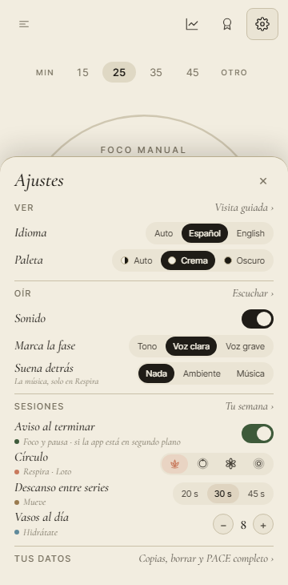

<title>Antes de los testers</title>
<meta name="claude:viewport-fit-sides" content="cover">
<link rel="preconnect" href="https://fonts.googleapis.com">
<link rel="preconnect" href="https://fonts.gstatic.com" crossorigin>
<link rel="stylesheet" href="https://fonts.googleapis.com/css2?family=EB+Garamond:ital,wght@0,400;0,500;1,400&family=Inter+Tight:wght@400;500;600&display=swap">
<style>
/* Una columna de papel y tinta, como las otras «Montado»: oliva para lo hecho, terracota para lo que
   espera a Ez. Los sonidos van en tarjetas con su reproductor, para oírlos uno junto a otro. */
:root{
  --paper:#F2EDE0;--card:#FBF8F1;
  --ink:#1F1C17;--ink-2:#4A453C;--ink-3:#77705F;
  --line:#C9C0A8;
  --olive:#3E5A3A;--olive-soft:rgba(62,90,58,.12);
  --terra:#A85E43;--terra-soft:rgba(168,94,67,.12);
  --display:'EB Garamond',Georgia,'Times New Roman',serif;
  --ui:'Inter Tight',system-ui,-apple-system,'Segoe UI',sans-serif;
}
@media (prefers-color-scheme: dark){:root:not([data-theme="light"]){
  --paper:#1d1a14;--card:#2c271f;--ink:#EDE5D3;--ink-2:#c0b49e;--ink-3:#B2A995;--line:#4d4536;
  --olive:#98B58B;--olive-soft:rgba(122,154,109,.16);--terra:#E8A98F;--terra-soft:rgba(232,169,143,.14);color-scheme:dark;
}}
:root[data-theme="dark"]{
  --paper:#1d1a14;--card:#2c271f;--ink:#EDE5D3;--ink-2:#c0b49e;--ink-3:#B2A995;--line:#4d4536;
  --olive:#98B58B;--olive-soft:rgba(122,154,109,.16);--terra:#E8A98F;--terra-soft:rgba(232,169,143,.14);color-scheme:dark;
}
*{box-sizing:border-box}
body{margin:0;background:var(--paper);color:var(--ink);font-family:var(--ui);font-size:16px;line-height:1.55;-webkit-text-size-adjust:100%}
main{max-width:960px;margin:0 auto;padding-left:max(16px,env(safe-area-inset-left,0px));padding-right:max(16px,env(safe-area-inset-right,0px));padding-block:40px 72px}
h1,h2,h3{font-family:var(--display);font-style:italic;font-weight:400;line-height:1.15;margin:0;text-wrap:balance}
h1{font-size:clamp(32px,6vw,44px)}
h2{font-size:clamp(23px,4vw,28px);margin:52px 0 10px;padding-top:22px;border-top:1px solid var(--line)}
h3{font-size:20px;margin:22px 0 8px}
p{margin:0 0 12px;color:var(--ink-2);max-width:68ch}
strong{color:var(--ink);font-weight:500}
.eyebrow{font-size:12px;letter-spacing:.14em;text-transform:uppercase;color:var(--ink-3);margin-bottom:10px}
.lead{font-family:var(--display);font-size:21px;color:var(--ink);max-width:62ch;margin-top:14px}
.fotos{display:grid;gap:14px;grid-template-columns:repeat(auto-fit,minmax(200px,1fr));margin:16px 0}
figure{margin:0;min-width:0}
figure img{display:block;width:100%;max-width:340px;height:auto;border:1px solid var(--line);border-radius:6px;background:var(--card)}
figcaption{font-size:13px;color:var(--ink-3);margin-top:6px}
figcaption b{font-weight:500}
.mal b{color:var(--terra)}.bien b{color:var(--olive)}
.sonidos{display:grid;gap:14px;grid-template-columns:repeat(auto-fit,minmax(250px,1fr));margin:16px 0}
.sonido{background:var(--card);border:1px solid var(--line);border-radius:8px;padding:14px;min-width:0}
.sonido.elegido{border-color:var(--olive);box-shadow:inset 0 0 0 1px var(--olive)}
.sonido .t{font-size:12px;letter-spacing:.12em;text-transform:uppercase;color:var(--ink-3);margin-bottom:6px}
.sonido h3{margin:0 0 6px}
.sonido p{font-size:14px;margin-bottom:10px}
.sonido audio{width:100%;display:block}
.tabla{overflow-x:auto;margin:14px 0}
table{border-collapse:collapse;width:100%;min-width:480px;font-size:14px}
th,td{text-align:left;vertical-align:top;padding:8px 10px;border-bottom:1px solid var(--line)}
th{font-size:12px;letter-spacing:.1em;text-transform:uppercase;color:var(--ink-3);font-weight:500}
.pregunta{border-left:3px solid var(--terra);padding:4px 0 4px 14px;margin:22px 0}
.pregunta p{margin-bottom:6px}
.pregunta h3{margin-top:0}
.rec{color:var(--olive)}
ul,ol{padding-left:20px;color:var(--ink-2);max-width:68ch}
li{margin-bottom:6px}
code{font-size:.9em;background:var(--card);border:1px solid var(--line);border-radius:3px;padding:0 4px;overflow-wrap:anywhere}
.v{display:inline-block;font-size:12px;border-radius:999px;padding:1px 9px;white-space:nowrap}
.hecho{background:var(--olive-soft);color:var(--olive)}
.falta{background:var(--terra-soft);color:var(--terra)}
</style>

<main>
  <div class="eyebrow">PACE · antes de dar la prueba a los testers · 12 nov. 2026</div>
  <h1>Antes de los testers</h1>
  <p class="lead">Los dos arreglos que pedía la auditoría externa están montados: la quinta pausa de un tester ya no gasta la única petición de valorar PACE, y en el móvil el fin de la pausa avisa, con un sonido distinto del fin del Foco.</p>
  <p>Todo va en la rama <code>claude/testers-12nov-954645</code>. Nada está en <code>main</code>: lo junta la coordinadora cuando digas. Hay cuatro preguntas para ti al final; la primera es elegir el sonido.</p>

  <h2>1 · La valoración espera a v1 <span class="v hecho">montado</span></h2>
  <p>PACE pide que lo valores en la tienda <strong>una sola vez</strong>, al terminar la quinta pausa entera. Hasta hoy, un tester la recibía en su quinta pausa, pero en la prueba cerrada de Google Play y en TestFlight esa reseña no se publica. La petición se gastaba y ya no volvía a salir nunca.</p>
  <p><strong>Ahora, mientras PACE está abierto para todos (hasta v1), no se pide.</strong> Las pausas se siguen contando. El día de v1, en cuanto el tester termine una pausa entera, sale la ventana: a esas alturas lleva semanas con PACE y su reseña sí se ve. Quien instale PACE ese día o después la recibe en su quinta pausa, como hasta ahora.</p>
  <p>No se ve nada distinto: lo que cambia es cuándo sale la ventana de la tienda.</p>

  <h2>2 · El fin de la pausa avisa, y suena distinto <span class="v hecho">montado</span></h2>
  <p>Hasta hoy, con PACE en segundo plano solo avisaba el fin del Foco. Si estabas en la pausa con el móvil en el bolsillo, nada te decía que tocaba volver. Y con PACE abierto, el fin de la pausa sonaba igual que el fin del Foco: sin mirar, no sabías si tocaba parar o volver.</p>
  <ul>
    <li><strong>Con PACE en segundo plano</strong>, en Android y en el iPhone, el fin de la pausa trae su aviso: «Pausa terminada · Cuando quieras, vuelve al Foco.» Con «A tu ritmo» dice qué bloque viene: «Ahora, el bloque 3 de 9.»</li>
    <li><strong>Con «A tu ritmo», también si no abres el móvil.</strong> Si oyes el fin del bloque y te levantas sin mirar, la pausa empieza sola, y su aviso ya está puesto desde que empezó el bloque.</li>
    <li><strong>Suena distinto del Foco</strong>, con PACE abierto y en el aviso, también en la web.</li>
    <li><strong>Suena una sola vez.</strong> Si el móvil ya avisó, PACE no vuelve a sonar al abrirlo. Es la misma regla que arregló la campana doble del Foco en la 0.198.1, y sigue en pie.</li>
    <li><strong>Con el sonido apagado en Ajustes</strong>, el aviso sale sin sonido, como el del Foco en el iPhone.</li>
    <li>Va con el mismo interruptor de siempre, «Aviso al terminar». Su línea pequeña en el móvil cambia de «Foco · si la app está en segundo plano» a «Foco y pausa · si la app está en segundo plano».</li>
  </ul>
  <div class="fotos">
    <figure class="bien"><figcaption><b>Ajustes en Android</b> · 360 px · la línea nueva bajo «Aviso al terminar»</figcaption></figure>
  </div>

  <h3>Los sonidos, para oírlos</h3>
  <p>Los dos candidatos salen de la misma receta que la campana del Foco, con las mismas notas afinadas de PACE, y se graban igual. Está montado el recomendado; cambiarlo es cambiar una palabra y volver a grabar el archivo.</p>
  <div class="sonidos">
    <div class="sonido">
      <div class="t">Fin del Foco · como hoy</div>
      <h3>La campana</h3>
      <p>Tres notas a la vez: un solo golpe brillante. «Para».</p>
      <audio controls preload="none" src="sonidos/pomodoro-end.wav"></audio>
    </div>
    <div class="sonido elegido">
      <div class="t">Fin de la pausa · A · recomendado, montado</div>
      <h3>Dos campanadas que suben</h3>
      <p>Una grave y otra más alta detrás: «vuelve». Se distingue de la campana por el ritmo, dos golpes y no uno, y por ser más grave.</p>
      <audio controls preload="none" src="sonidos/pausa-end-dos.wav"></audio>
    </div>
    <div class="sonido">
      <div class="t">Fin de la pausa · B</div>
      <h3>Tres toques</h3>
      <p>Tres golpes cortos en la misma nota, como llamar a la puerta. Muy claro, pero más insistente.</p>
      <audio controls preload="none" src="sonidos/pausa-end-tres.wav"></audio>
    </div>
  </div>

  <h2>Las preguntas</h2>

  <div class="pregunta">
    <h3>P1 · ¿Qué sonido para el fin de la pausa?</h3>
    <p><strong>A</strong> · Dos campanadas que suben. <strong>B</strong> · Tres toques.</p>
    <p class="rec">Recomendada: <strong>A</strong>. Se distingue de la campana del Foco sin mirar, por el ritmo, y es igual de tranquila: B se parece más a una alarma. Es la que está montada.</p>
  </div>

  <div class="pregunta">
    <h3>P2 · Las pausas de antes de v1, ¿cuentan para las cinco?</h3>
    <p><strong>A</strong> · Cuentan: el día de v1, el tester recibe la ventana en su primera pausa entera, si ya hizo cinco antes. <strong>B</strong> · No cuentan: el día de v1 la cuenta empieza en cero, y la recibe tras cinco pausas más.</p>
    <p class="rec">Recomendada: <strong>A</strong>, que es la montada. Los testers son quienes más ganas tienen de valorar, y sus reseñas llegan el mismo día del lanzamiento, que es cuando más pesan en la tienda. Cambiar a B es una línea.</p>
  </div>

  <div class="pregunta">
    <h3>P3 · En Android, ¿el fin del Foco también con la campana de PACE?</h3>
    <p>Al probar esto vi que en Android, con PACE en segundo plano, el fin del Foco suena con el sonido de avisos del móvil, no con la campana (en el iPhone sí suena la campana desde la 0.200.0). Y no respeta el sonido apagado de Ajustes. El de la pausa sí lleva el suyo y lo respeta.</p>
    <p><strong>A</strong> · Que el Foco en Android lleve también la campana de PACE y respete el sonido apagado: un canal nuevo, como el de la pausa. <strong>B</strong> · Dejarlo como está.</p>
    <p class="rec">Recomendada: <strong>A</strong>, antes de dar la prueba: así los testers de Android oyen lo mismo que los del iPhone, y «campana = parar, dos campanadas = volver» se aprende igual en los dos. Es poco trabajo; no está montado.</p>
  </div>

  <div class="pregunta">
    <h3>P4 · En Android, ¿ofrecer «que el aviso llegue a su hora» al empezar el primer Foco?</h3>
    <p>Desde Android 14, si no das el permiso de «Alarmas y recordatorios», Android puede retrasar los avisos unos minutos. En un Foco de 25 minutos se nota poco; en una pausa de 5, sí: el aviso de volver podría llegar tarde. Hoy ese permiso solo se ofrece en Ajustes, con un toque.</p>
    <p><strong>A</strong> · Una línea, una sola vez, al empezar el primer Foco en Android, con el toque que abre ese ajuste. <strong>B</strong> · Solo en Ajustes, como hoy.</p>
    <p class="rec">Recomendada: <strong>A</strong>. Con el aviso de la pausa, llegar a su hora importa más que antes. No está montado: haría falta enseñarte cómo se ve antes de decidir.</p>
  </div>

  <h2>Lo que falta probar en un móvil</h2>
  <p>Las pruebas imitan a Android y al iPhone, pero aquí no se puede compilar ninguna de las dos apps. Esto se mira con una versión de prueba instalada:</p>
  <ol>
    <li><strong>Android, el aviso de la pausa.</strong> Elige «Pausa» arriba, empiézala y bloquea el móvil. A los 5 minutos debe llegar «Pausa terminada» con las dos campanadas, no con el sonido del móvil. Al desbloquear y abrir PACE no debe sonar otra vez.</li>
    <li><strong>Android, con «A tu ritmo».</strong> Empieza un bloque y bloquea el móvil sin tocar nada más. Debe sonar el fin del bloque y, después de la pausa, el aviso de la pausa.</li>
    <li><strong>Android, sin sonido.</strong> Apaga el sonido en Ajustes de PACE y repite el paso 1: el aviso sale sin sonido. En los ajustes de notificaciones de PACE en Android deben verse dos tipos nuevos: «Fin de la pausa» y «Fin de la pausa, sin sonido».</li>
    <li><strong>iPhone</strong>, los pasos 1 y 2 con TestFlight. Y con el interruptor de silencio del iPhone puesto, el aviso no debe sonar.</li>
    <li><strong>La valoración</strong> no sale en ninguna de las dos versiones de prueba, por muchas pausas que hagas. Lo de v1 se verá el día de v1.</li>
  </ol>

  <h2>Lo que se ha comprobado aquí</h2>
  <div class="tabla"><table>
    <thead><tr><th>Prueba</th><th>Qué vigila</th><th>Se vio fallar con…</th></tr></thead>
    <tbody>
      <tr><td>La valoración, «hasta v1» (Android e iPhone)</td><td>La quinta pausa de un tester no la pide ni la gasta; con v1, la siguiente sí</td><td>la espera a v1 quitada; las pausas de antes de v1 sin contar</td></tr>
      <tr><td>El fin de la pausa (15, Android e iPhone)</td><td>El aviso, su hora, su sonido, sin sonido, al volver, «A tu ritmo», PACE reabierto, los canales</td><td>once fallos a propósito, uno a uno: el sonido doble, sin aviso, la campana en vez del sonido nuevo, sin el aviso de «A tu ritmo», el aviso quitado en segundo plano, el aviso viejo sin quitar al reabrir, sin el canal mudo, sin el sonido en el iPhone, sin el sonido en el canal</td></tr>
      <tr><td><code>verify</code></td><td>Que los archivos de sonido sean las recetas de hoy, estén donde los busca el móvil y no suenen igual que la campana</td><td>—</td></tr>
    </tbody>
  </table></div>
</main>
